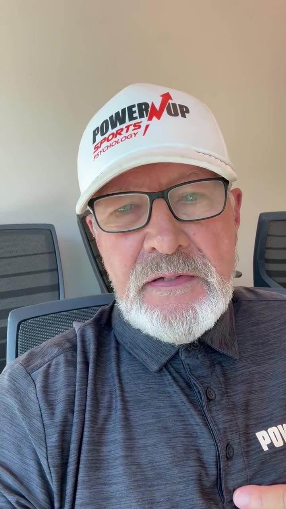
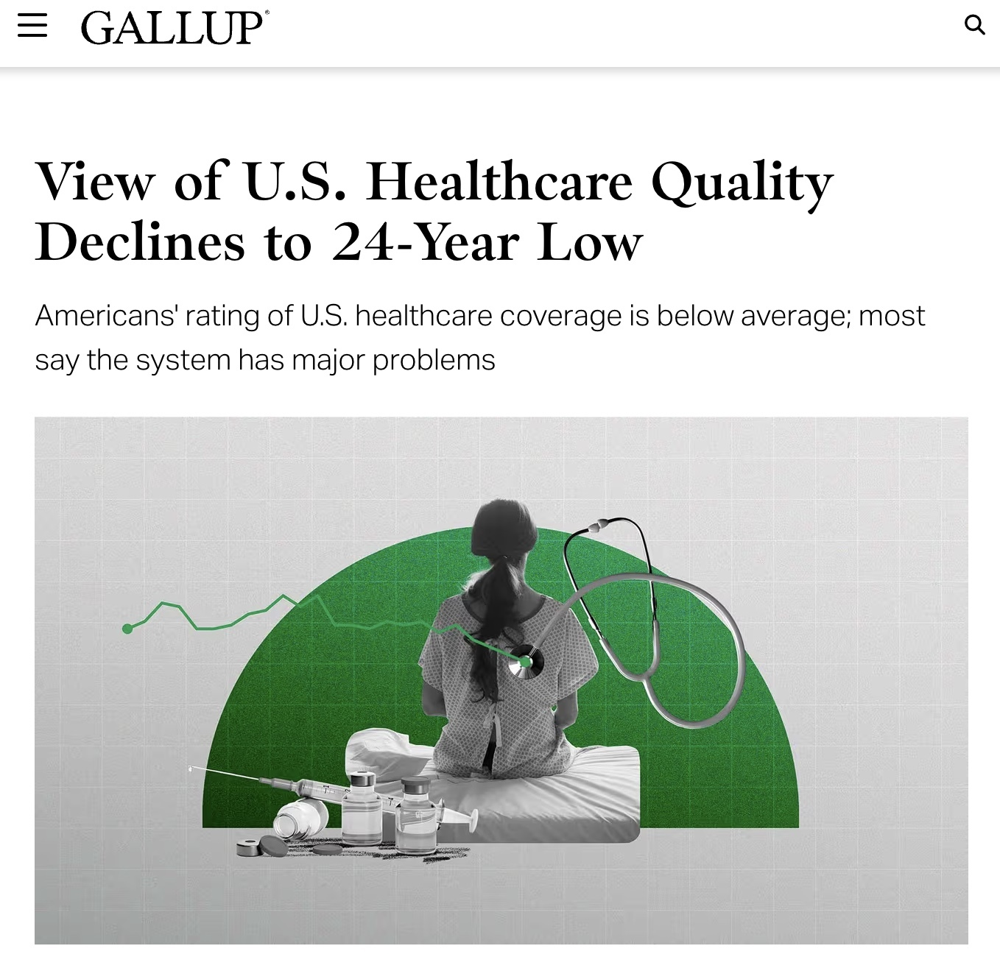
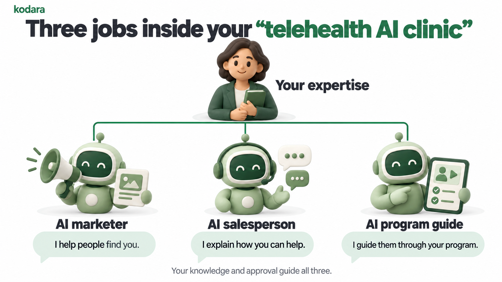

What they want to change or understand.
A Kodara webinar for established health and wellness experts

How to scale your health and wellness business with AI.
Build your own “telehealth AI clinic” around your expertise.
AI marketing, AI sales, and online education and programs.
01The opportunity
Meet Sandra AI.
One part of Sandra’s online business. Later, we’ll connect the marketing, conversation, and program.
01The opportunity
Health and wellness interest is already moving online.
Your audience is already online. People are looking for answers, explanations, and next steps from their phones and computers.
AnxietyHormonal healthGLP-1s
What they think is creating the problem.
Whether they want information, an approach, or help.
01The opportunity
You have probably heard this before: take what you know and put it online.
Online course. Group program. High-ticket coaching.
But most people on this webinar have not seen massive success with those models.
Or you saw how much work it would take.
The offer, content, funnel, sales, technology, support, and delivery become an entire second business.
01The opportunity
How to scale your health and wellness business with AI.
01Find the health questions people are already searching for.
02See how your expertise could become a “telehealth AI clinic”.
03See how AI can help market, sell, and deliver it.
01The opportunity

My name is Lucas Tyson. I’m the founder and CEO of Kodara.
$50M+Online marketing agency built by age 25.
100,000+Leads and appointments generated, including for health and wellness businesses.
01The opportunity
A closer look at the work.
Proof image 1
01The opportunity
What clients have shared.
Proof image 2
01The opportunity
My girlfriend Michelle was diagnosed with Graves’ disease.
Image 1
Image 2
Image 3
01The opportunity
Then I saw what happened when the right expertise became easier to reach.
Someone found a wellness expert online and completed the entire program from home.
01The opportunity
We have already helped experts turn what they know into something people can use online.

Dr. Mike Power-Up Sports PsychologyDr. Mike AI launched its first product and moved into testing.
Five years of ideas and a book became a launched first prototype.
Her virtual business reduced dependence on one-to-one delivery and created time for a passion project.
These are individual client experiences. Results vary, and no specific outcome is guaranteed.
01The opportunity
This is one reason independent providers are in demand.

Additional proof screenshot
Gallup measures public views of U.S. healthcare quality. It does not measure demand for independent providers directly.
02Find the demand
Start with evidence of what people already want.
What are they asking?
Look for the problems, questions, and outcomes people put into search.
Are people looking?
Check estimated searches, related terms, and patterns over time.
Can you help?
Find the overlap between what people want and what you can responsibly deliver.
Search activity is a demand signal. It does not prove willingness to pay or guarantee clients.
02Find the demand
One problem can lead us to a whole set of searches.
- Start
Choose a problem
Begin with a problem your expertise can help address.
- Expand
Mine related searches
Explore related keywords, questions, and the language people repeat.
- Group
Find the intent
Separate learning about a problem from comparing ways to get help.
- Check
Pick what to test
Review search estimates, competition, and the fit with your expertise.
Let’s open the keyword tool and look at real searches together.
02Find the demand
Now we have two ways to reach those people.
Create answers people can find.
Use the questions we found to shape useful articles, videos, and search pages.
Search or content brings them to your offer.
Test messages against that demand.
Use the same language to shape ads and landing pages, then measure the response.
An ad brings them to your offer.
Now people can find you. What happens when they want your help?
Both paths require testing. Paid ads involve spend; search interest does not guarantee sales.
02Find the demand
Better marketing can make the calendar bottleneck worse.
More people raise their hand, but the same number of hours remain available. The calendar is the bottleneck.
A full calendar proves demand. It also caps what you can personally deliver.
03Your telehealth AI clinic
Grow beyond your clinic with AI.
🧠Your expertise
🏥 Your in-person clinic
People come to your location.
- 🏘️
Reach nearby people
Your local service area
- 📅
Book an appointment
Reception and scheduling
- 🧑⚕️
Help them in person
You and your care team
Grow with more appointments,
staff, and space.
💻 Your “telehealth AI clinic”
Education, guidance, and programs.
- 📣
Reach people online
AI marketing content and ads
- 💬
AI answers and enrolls
Your AI salesperson
- 📱
Deliver education and programs
Your knowledge, with AI
Let more people benefit
from what you know.
Your expertise and oversight guide both businesses. The online clinic delivers education, guidance, and programs.
03Your telehealth AI clinic
Grow beyond your clinic with AI.
🧠Your expertise
🏥 Your in-person clinic
People come to your location.
- 🏘️
Reach nearby people
Your local service area
- 📅
Book an appointment
Reception and scheduling
- 🧑⚕️
Help them in person
You and your care team
Grow with more appointments,
staff, and space.
💻 Your “telehealth AI clinic”
Education, guidance, and programs.
- 📣
Reach people online
AI marketing content and ads
- 💬
AI answers and enrolls
Your AI salesperson
- 📱
Deliver education and programs
Your knowledge, with AI
Let more people benefit
from what you know.
Your expertise and oversight guide both businesses. The online clinic delivers education, guidance, and programs.
03Your telehealth AI clinic
Grow beyond your clinic with AI.
🧠Your expertise
🏥 Your in-person clinic
People come to your location.
- 🏘️
Reach nearby people
Your local service area
- 📅
Book an appointment
Reception and scheduling
- 🧑⚕️
Help them in person
You and your care team
Grow with more appointments,
staff, and space.
💻 Your “telehealth AI clinic”
Education, guidance, and programs.
- 📣
Reach people online
AI marketing content and ads
- 💬
AI answers and enrolls
Your AI salesperson
- 📱
Deliver education and programs
Your knowledge, with AI
Let more people benefit
from what you know.
Your expertise and oversight guide both businesses. The online clinic delivers education, guidance, and programs.
03Your telehealth AI clinic
Three jobs inside your “telehealth AI clinic”.
Your expertise powers three AI team members.
- AI marketer: I help people find you.
- AI salesperson: I explain how you can help.
- AI program guide: I guide them through your program.
Your knowledge and approval guide all three.

Illustrative AI team. Bring in a human when needed. AI does not replace professional judgment or guarantee sales or health outcomes.
03Your telehealth AI clinic
Here is Sandra AI in action.
04Working with Kodara
Here’s what we build for your “telehealth AI clinic”.
- Demand research and positioning
- Your offer and customer journey
- Your website and brand
- Your AI marketing content and ads
- Your AI sales conversations
- Launch setup and acquisition path
- Focused interviews to capture your expertise
- Your approved AI knowledge system
- Your AI program and delivery experience
- Connections to your approved programs
- Professional boundaries and human handoffs
- Testing, correction, and expert review
You bring the expertise, review, and approval. Kodara builds your online business around it.
Professional judgment and ongoing oversight stay with you. No revenue or client outcome is guaranteed.
04Working with Kodara
Choose your license.
$8,000per year
A recurring yearly subscription.
$15,000one time
Pay once. Own it forever.
05Your next step